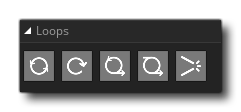

La bibliothèque d'actions Boucle contient les actions requises pour créer des boucles dans votre code d'action de jeu. Une boucle est simplement une manière de parcourir le même ensemble d'actions 1 fois ou plus en fonction de certaines conditions et est pratique dans toute situation où vous devez répéter les mêmes actions encore et encore.
La bibliothèque de boucles a les actions suivantes:
| Boucle | |
 | Répéter |
 | Tandis que |
 | Pour |
| Pause |